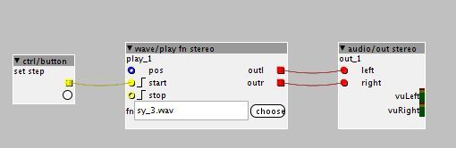

Hi,
after update to 1.0.10 I somehow cant make it play a wav from sdcard(?)


Hi,
Could you post a screenshot of the preferences dialog? I think the firmware directory assigned is to an older version?
Could you try deleting the file xpatch.h.gch in C:\Users\adminator\Documents\axoloti\build\?
Ok, I did.
Now it works, when I upload the wav-files through the FileManager.. but it says it cant find the file
Axoloti says: file error: FR_NO_FILE, filename:"0:/wavtest/sy_3.wav"
..when I upload the wav-files thourgh card-reader
card-reader mode is fine, as before .
the above was an 'upgrading issue'
@johannes , Id assume the issue is the file date/times on the firmware files that are in the released build, hence the compiler believes it doesn't need to rebuild the pch.
I think we need to be able to do a make clean on upgrade.
The question is, how to detect that an upgrade is in progress....
perhaps we store app-version on the preferences file, so we know if we load an old version, we need to upgrade.
we can then fire of an upgrade procedure, some of which are 'general' like make clean on patch, and others which my be version specific...
( Ive noticed a requirement also to do some 'upgrade work' with the libraries too, so can be good to use the same mechanism)
There are two solutions (alternatives, not steps)
Put "sy_3.wav" in the same folder on your computer as your patch "wavetest.axp". Axoloti will automatically upload "sy_3.wav" to a folder named "wavetest" on the sdcard when you start the patch. If the filesize is bigger than 8MB, automatical upload is skipped (because it could take a while), you need the 2nd solution:
Use cardreader mode or a separate sdcardreader to copy "sy_3.wav" into a folder named "wavetest" on the sdcard.
By default files are searched in a folder with the name of the patch, to avoid building a pile of files in the top directory of the sdcard, and to avoid conflicts when different patches reference a different "bd.wav".
If you do want to use the same file from different patches, prefix the filename with "/" in the patch, then they will be expected in the top directory of the sdcard.
Thanks for testing!

{kind=link}
{kind=link}